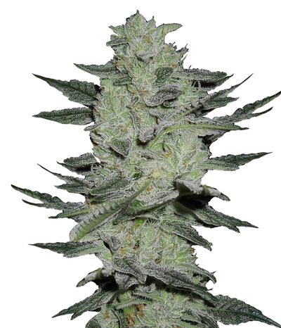
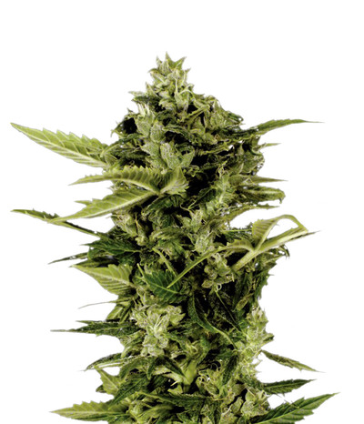
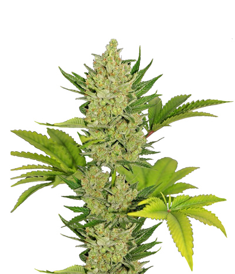
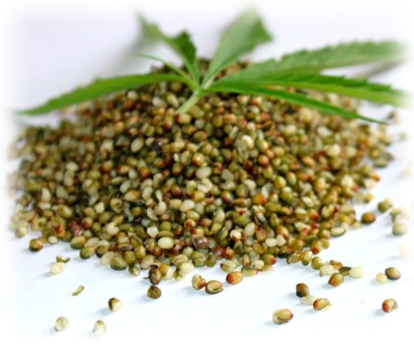
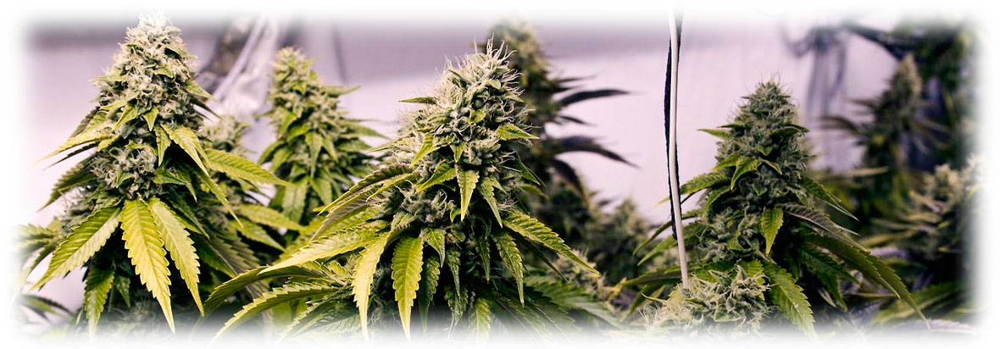
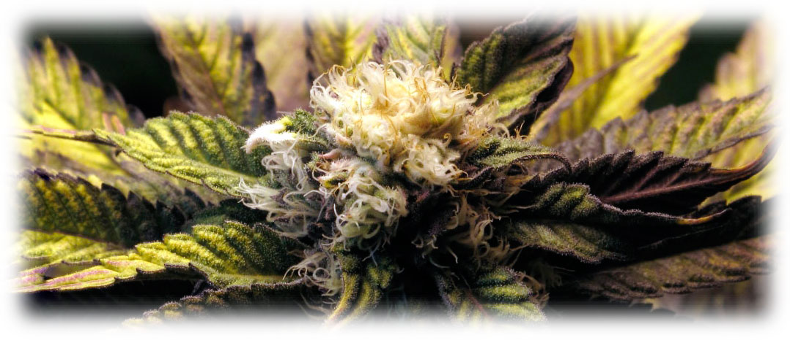

Для тех, кто только начинает свой путь в гровинге, автоцветущие сорта являются идеальным выбором. Они прощают многие ошибки новичков, растут быстрее традиционных растений и не требуют строгого соблюдения светового режима для начала цветения.
Популярные автоцветущие сорта
Auto Jack Herer
Банк: Green House Seeds. Мощный психоактивный эффект, высокая урожайность. Идеален для тех, кто ценит качество и силу.

Auto Bomb
Банк: Green House Seeds. Сорт с отличным балансом вкуса и мощности. Один из самых стабильных автоцветов на рынке.
Auto Exodus Cheese CBD

Банк: Green House Seeds. Сорт с повышенным содержанием КБД, что делает его отличным выбором для медицинских целей.
Auto Blue Cheese
Банк: Barneys Farm. Известен своим уникальным ароматом и мощным расслабляющим эффектом.

Что такое «Автоцвет»?
Автоцветущие сорта появились благодаря скрещиванию элитных сортов Сативы и Индики с диким видом Cannabis Ruderalis. Именно этот вид наделил гибриды способностью зацветать автоматически по достижении определенного возраста, независимо от длины светового дня.
Преимущества автоцветов

Скорость
Жизненный цикл значительно короче: от семени до сбора урожая проходит всего 60-80 дней.
Устойчивость

Гены Рудералиса делают растения более крепкими, устойчивыми к вредителям, плесени и перепадам температур.
Компактность
Автоцветы обычно не вырастают в огромные деревья, что делает их идеальными для выращивания в гроубоксах или на балконах.

Советы по выращиванию
Важное напоминание!
Выращивание марихуаны в Украине запрещено законом. Данная страница создана исключительно для ознакомительных целей и изучения ботанических особенностей растений.

🌿 Хотите выбрать идеальный сорт?
Перейдите в наш топ-лист лучших сортов, чтобы сравнить характеристики и выбрать подходящий вариант.
Лучшие сорта